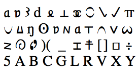
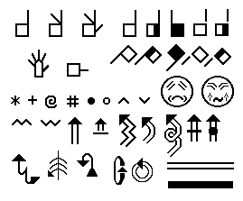
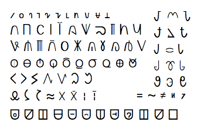
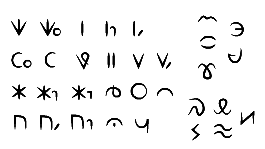
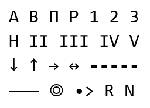
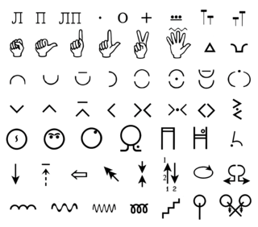
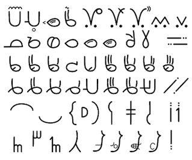
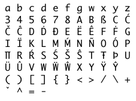
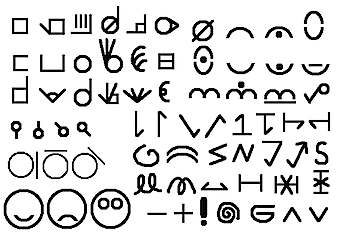
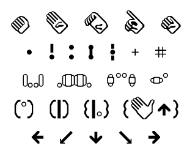

Первый метод записи ЖЯ разработал профессор Галлодетского университета Уиллиам Стоуки для американского жестового языка (амслена). До Стоуки многие американцы считали, что американский жестовый язык — это просто искажённый английский. Он показал, что амслен — это самостоятельный язык, как и прочие жестовые языки.
В 1965 году он опубликовал словарь американского жестового языка и разработал письменность, благодаря которой жесты можно искать по локализации, конфигурации и движению. Эта система разработана специально под амслен, и чтобы использовать её для других жестовых языков, её приходится модифицировать. Кроме того, в нотации Стоуки нет возможности указать немануальные компоненты, и она не подходит для записи полноценных высказываний.
Вот часть символов, использующихся в нотации Стоуки. Она записывается в строчку, слева направо, и использует подстрочные и надстрочные символы и прочую диакритику. У жеста сначала записывается локализация, затем конфигурация, и в конце движение.
Нотацию Стоуки в основном используют лингвисты и исследователи. Имеются особые шрифты для нотации Стоуки
В 1974 году систему для записи жестовых языков разработала танцовщица Валери Саттон по просьбе исследователей ЖЯ из Копенгагенского университета. Ранее Саттон разработала систему записи танцевальных движений.
SignWriting предназначена для точной записи любого жестового языка. В ней используется множество символов, в том числе для записи немануальных компонентов.
Вот часть символов, использующихся в SignWriting. Жесты записываются сверху вниз, а символы могут быть повёрнуты в одном из 8 направлений и по-разному размещаться относительно друг друга. Символы локализации, конфигурации и движения вместе создают изображение жеста.
В 1985 группа исследователей из Гамбургского университета разработала ещё одну систему для записи жестовых языков: Гамбургскую нотацию (Hamburg Notation System). Она до сих пор часто используется в лингвистических статьях. На сегодняшний день разработана уже четвёртая версия HamNoSys.
HamNoSys предназначена для точной записи любого жестового языка и имеет некоторые средства для выражения немануальных компонентов, однако она не планировалась для записи полных предложений.
Вот некоторые символы из Гамбургской нотации. Она записывается в строчку, слева направо, и использует подстрочные и надстрочные символы и прочую диакритику. Жест записывается в порядке конфигурация, ориентация, локализация, действия.
В 1987 году лингвист Дон Ньюкёрк из Института Солка разработал для амслена письменность, которую он назвал SignFont, и опубликовал пособие для изучения SignFont.
Вот символы, использующиеся в SignFont. Жесты записываются слева направо, компоненты жеста записываются в следующем порядке: конфигурация, место контакта, конфигурация и место контакта второй руки, локализация, локализация второй руки, движение. Дополнительная диакритика уточняют информацию, предоставляемую основным символом.
В сети сохранилось мало информации о пособии и о самой системе. Сайт автора с документацией его работы недоступен с 2002 года. Онлайн-архив текста страницы (без символов и изображений) доступен по ссылке: Архив заглавной страницы SignFont
В 1990-х глухой лингвист Самуэль Джеймс Сапалла начал работу над своей системой для записи амслена, основывающейся на SignFont.
В сотрудничестве с Канадской культурной ассоциацией глухих он опубликовал словарь жестового языка для детей используя письменность, которую он назвал ASL-phabet.
ASLphabet предназначен для обучения детей с использованием словаря. Эта система состоит из небольшого числа тщательно подобранных символов. В ней нет указаний на немануальные компоненты, и она не предназначена для записи полных предложений.
Вот символы, использующиеся в ASLphabet. Всего в ней представлено 22 формы руки, 5 положений и 5 типов движения. Жесты записываются слева направа в порядке конфигурация, локализация, движение.
В 1991 году исследователь РЖЯ Галина Лазаревна Зайцева опубликовала книгу «Дактилология. Жестовая речь». Для демонстрации структуры жеста она привела фрагмент возможной нотации, которая могла бы использоваться для записи слов русского жестового языка.
Вот символы, которые используются в нотации Зайцевой. Жест записывается в порядке конфигурация, локализация, направление движения, модификация движения.
Руку, выполняющую движение, можно обозначить курсивным символом п или л в начале. Двуручные жесты записываются на двух строчках
Галина Зайцева не претендует на полноценно разработанную систему нотации жестов. Её задачей было лишь продемонстрировать, как такая нотация могла бы выглядеть.
Система Димскис
В 1998 году Лидия Сергеевна Димскис выпустила учебное пособие для изучения основ белорусского жестового языка. В книге она вводит систему условных знаков, через которую далее описывает все слова жестового языка, представленные в книге.
Вот часть символов, используемых в системе Димскис. Жесты записываются слева направо, каждый жест записывается в порядке рука, конфигурация, ориентация, локализация, движение. Многие символы составные: стрелки могут иметь разную форму и штриховку, на символах локализации обозначается место контакта.
В книге представлены не только отдельные жесты, но и полноценные высказывания, однако средств для указания немануальных компонентов не предусмотрено.
В 2003 глухой лингвист Роберд Арнольд Огастес начал разрабатывать свой способ записи амслена, чему в итоге в 2007 посвятил свою магистерскую диссертацию в Галлодетском университете. Он представил si5s миру на конференции Deaf Expo в июле 2010 года.
si5s предназначена конкретно для амслена и включает в себя символы для выражения немануальных компонентов, что позволяет в полной мере отражать грамматику американского жестового языка.
Вот часть символов, использующихся в si5s. По задумке si5s должна записываться на бумаге: символы можно вращать и свободно размещать относительно друг друга. Кроме того, заранее заданного набора стрелок нет — движение любой формы можно изобразить единой чертой. Символы и черты вместе создают изображение жеста, а сами жесты упорядочены слева направо.
В 2005 году лингвист Дэвид Джошуа Питерсон разработал совместимую с компьютерами систему для точной записи сконструированных жестовых языков. Он назвал её Sign Language IPA (МФА жестовых языков), сравнивая её с международным фонетическим алфавитом, который используется для точной записи звуков звучащих языков. SLIPA имеет средства для указания немануальных компонентов, но не предназначена для записи полных высказываний.
Все символы SLIPA имеются в Юникоде. Кроме того, для каждого символа, выходящего за пределы ASCII, в SLIPA определён способ записи соответствующего символа через ASCII (например Ü можно заменять на U:)
SLIPA записывается слева направо и использует надстрочные знаки и диакритику.
Дэвид Джошуа Питерсон — это также создатель дотракийского языка, использующегося в сериале Игра престолов.
В 2010 году доктор Дональд Грушкин, глухой преподаватель Университета штата Калифорния, разработал упрощённую систему для записи амслена. Он назвал её SignScript. Эта система объяснена на американском жестовом языке на его Ютуб-канале (с английскими субтитрами).
Вот часть символов, использующихся в SignScript. Всего в системе есть 46 символов для конфигурации, 4 для ориентации, 12 для локализации, 39 для движения и 29 для немануальных компонентов.
В основном символы упорядочиваются в следующем порядке: конфигурация, ориентация, локализация, движение.
Спустя год после выпуска видео о системе, автор выложил шрифт для SignScript и отрывок словаря на свой сайт. К сожалению, сайт больше недоступен, но какую-то информацию можно найти на странице доктора Грушкина в Facebook*
* Соцсеть Facebook принадлежит компании Meta, признанной экстремистской организацией и запрещенной в РФ
В 2013 году Мюррей Инман, занимающийся образовательными технологиями и доступностью в колледже Рио Саладо, опубликовал сайт, где представлял свою систему для записи американского жестового языка: Symbol Font for ASL. Его система работает на символах ASCII, но сопровождается шрифтом, благодаря чему запись получается более графичной и интуитивной.
Вот часть символов, использующихся в ASL Font. Бо́льшую долю занимают символы, изображающие конфигурации. Для типов контакта используются некоторые символы пунктуации. Прочие компоненты (например, локализацию и ориентацию) обозначают последовательностью символов. Порядок компонентов не строго фиксирован — автор призывает пользователей экспериментировать и сравнивать разные подходы.
Инман стремился добиться сочетания лучших черт линейных и графичных систем. Засчёт линейности он сделал систему удобной для использования на компьютере — для письма достаточно установить шрифт, и даже не требуется особая раскладка клавиатуры. Однако система приближена к графичным в том, что элементы визуально похожи на то, что они обозначают, и распологаются относительно друг друга примерно в соответствии с их взаимном расположением в пространстве.
Именно проект Инмана, переведённый на русский и адаптированный для РЖЯ, представлен на этом сайте.
При глоссировании русского жестового языка жесты высказывания записываются в том порядке, в котором они воспроизводятся в РЖЯ, но для каждого жеста записывается его русский перевод. Дополнительная информация (например, направление, повторение или немануальные компоненты) может отображаться особыми условными обозначениями.
Можно сказать, что слово, указываемое для жеста, это его «название». Это название обычно соответствует одному из значений жеста, хотя не всегда тому, которое имеется в виду в данном контексте. Глоссирование используется для отражения на письме грамматики и синтаксиса РЖЯ независимо от самой формы жестов.
er
ВЫСОТКА ОКНО К-А-Н-А-Р-Е-Й-К-А CL:СИДЕТЬ
ПР: CL:СМОТРЕТЬ.В.БИНОКЛЬ IX ПОЯВИТЬСЯ
ЛР: CL:СМОТРЕТЬ.В.БИНОКЛЬ-------------
ПР: КОТ CL:ОПУСТИТЬ.БИНОЛКЬ
ЛР: --- CL:ОПУСТИТЬ.БИНОЛКЬ
Вот примеры проглоссированных высказываний на РЖЯ. Одновременные элементы (немануальные компоненты или одновременные жесты на двух руках) можно указывать на разных строчках один под другим.
Глоссирование часто используется в научной литературе по жестовым языкам и может использоваться при преподавании. В личной переписке глоссированный РЖЯ обычно не используется
Эта система [ASLphabet], в отличие от SignWriting, признаёт (как нам кажется, вполне справедливо) тот факт, что письменная форма слова не должна быть инструкцией по его воспроизведению. Она лишь должна отличаться от остальных достаточно, чтобы вызвать у читателя ассоциацию с нужным словом.
Некоторые из представленных выше систем относительно неточны. Действительно — если текст предусмотрен для людей, хорошо владеющих жестовым языком, достаточно указать ту информацию, которая позволит отличить жест от других. Не обязательно указывать во всех подробностях, как формируется жест. (Так, ASLphabet и глоссирование в основном предназначены для читателей, уже владеющих жестовым языком.)
Другие же системы, напротив, построены так, чтобы сообщить всю информацию о воспроизведении жеста читателям, которые могут не знать этот жест. (В SignWriting, HamNoSys, SLIPA и системе Димскис жесты описываются максимально точно.)
Нотация Стоуки и si5s находятся где-то посередине. Они довольно точны, однако частично они всё же опираются на то, что читатель знает жестовый язык.
В письменном русском тоже бывает неоднозначность. В большинстве случаев, если какие-то слова пишутся одинаково, но произносятся по-разному, их всё ещё можно отличить при помощи контекста. При этом любой звучащий язык можно однозначно передать при помощи международного фонетического алфавита, но в повседневной жизни такая точная запись ни к чему.
Выводы
Почему у РЖЯ нет письменности? Потому что сообщество глухих пока не приняло никакую письменность. Возможно, в будущем это поменяется.
Многие из существующих систем не создавались для повседневного использования — то, что они не получили широкого распространения, неудивительно. Чтобы письменность нашла поддержку, её должно быть легко освоить и удобно использовать.
Лишь некоторые системы записи ЖЯ предлагаются для обычного общения. Если вас интересует письменный РЖЯ, рассмотрите разные и выберите ту, которая вам по душе!
 Вот некоторые символы из Гамбургской нотации. Она записывается в строчку, слева направо, и использует подстрочные и надстрочные символы и прочую диакритику. Жест записывается в порядке конфигурация, ориентация, локализация, действия.
Вот некоторые символы из Гамбургской нотации. Она записывается в строчку, слева направо, и использует подстрочные и надстрочные символы и прочую диакритику. Жест записывается в порядке конфигурация, ориентация, локализация, действия.